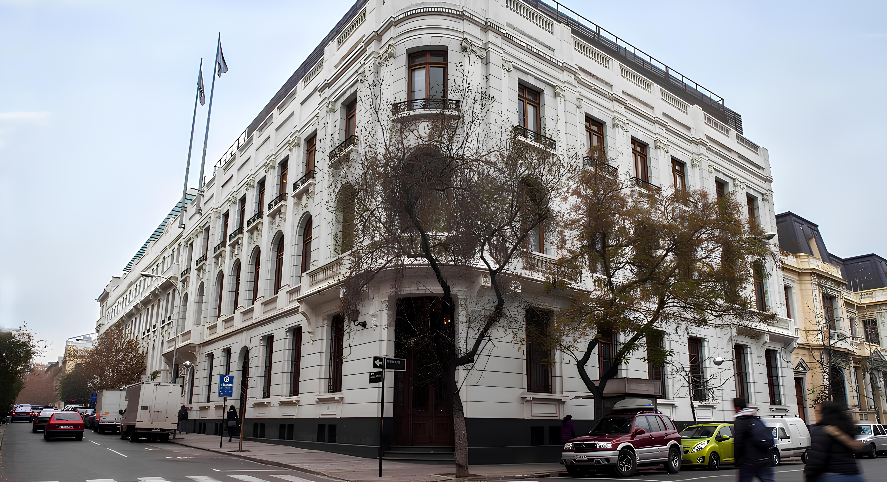

<ion-content [fullscreen]="false">
    <!-- Background Image -->
    

    <!-- Centered Content -->
    <div class="centrar">
        <div class="center-container ion-padding-vertical">

            <!-- Card Container -->
            <ion-card class="enmarcar" style="background-color: #ffffff; box-shadow: 0 0 10px rgba(0, 0, 0, 0.2);">

                <!-- Logo -->
                

                <ion-card-content>
                    <!-- Titles -->
                    <h2 style="color: black;">{{ 'PasswordRecovery.Title' | translate }}</h2>
                    <h3 style="color: black;">{{ 'PasswordRecovery.Step2' | translate }}</h3>


                    <!-- Question and User Name -->
                    <ion-card-header style="background-color: transparent;">
                        <ion-label style="font-size: 1.7em; color: #6c757d;">{{ nombre }} {{ apellido }}</ion-label>
                        <br>
                        <ion-label class="Centered" style="font-size: 1.8em; color: #6c757d;">{{ pregunta }}</ion-label>
                    </ion-card-header>
                    <br>

                    <!-- Answer Input Field -->
                    <ion-item class="margin-bottom-6">
                        <ion-input type="text" [(ngModel)]="respuestaInput" [label]="'AnswerRecovery.EmailLabel' | translate" labelPlacement="floating" required="true">
                        </ion-input>
                    </ion-item>

                    <!-- Verify Button -->
                    <ion-grid>
                        <ion-row>
                            <ion-col class="centrar">
                                <ion-button shape="round" size="medium" (click)="verificarRespuesta()">
                                    <ion-icon name="refresh-outline"></ion-icon>
                                    {{ 'answerRecovery.RecoverButton' | translate }}
                                </ion-button>
                            </ion-col>
                        </ion-row>
                    </ion-grid>
                    <ion-label class="centrar">
                        <a [routerLink]="['/ingreso']">{{ 'PasswordRecovery.GoBack' | translate }}</a>
                    </ion-label>
                </ion-card-content>
            </ion-card>
        </div>
    </div>
</ion-content>